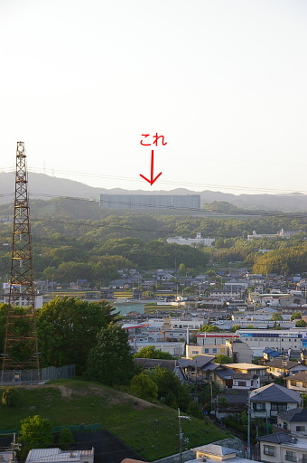

自宅から見える山の上に、いつのまにか巨大な謎の構造物がつくられていました。

工事中のマンションの類に見えないこともありませんが、長辺は 1km くらいありそうです。巨大すぎます。
「マンションの類にしてはあまりに巨大すぎるし、なんだろうねぇ？」などと家族と話していたのですが、今日になって構造物が何であるのかがわかりました。
「あれ、Amazon や」
母親が情報を仕入れてきました。
そうだったのか！！、と合点がいきました。
そういえば最近 Amazon で商品を購入して、荷物の追跡サービスで確認すると、大阪府茨木市から出荷される荷物が少なくありませんでした。実はここから商品が出荷されていたんですねぇ。
しかし、この Amazon の配送センター、自宅の目と鼻の先にあります。なのに出荷から配送まで 2 日間も要しています。宅配便なんて使わずに、注文当日に自転車で配送してほしいものです ( もちろん冗談です )。